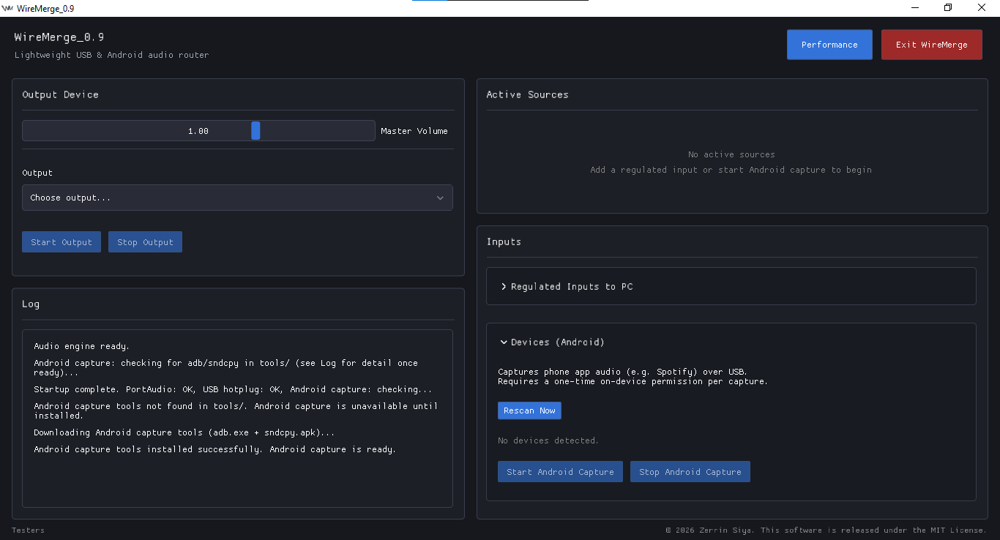

Mix your audio, the simple way
WireMerge is a free, open-source Windows audio mixer that merges microphones, USB audio sources, and Android phone audio into a single output stream using just USB and ADB, with no DAW required.

Why WireMerge
USB audio merging
Plug in phones, TVs, or USB sound cards and mix them straight into your PC's output, similar to Bluetooth pairing but over USB.
Android app-audio capture
Capture Android app audio (Spotify, YouTube, and more) over ADB using the same technique as scrcpy and sndcpy without root being required.
Lightweight by design
Runs on low-end PCs with minimal CPU and memory usage complete solution to full digital audio workstation or heavyweight mixing app needed.
Free and open source
WireMerge is fully open source under the MIT license, with source, releases, and documentation available on GitHub.
Frequently asked questions
What is WireMerge?
WireMerge is a free Windows utility that merges audio from multiple USB sources such as microphones, phones, TVs, or USB sound cards into one output stream, so you don't need a separate DAW or hardware mixer. NOT THE SAME AS WIRE MERGE.
How does WireMerge capture Android phone audio?
WireMerge uses ADB (Android Debug Bridge) and Android's Playback Capture API, the same approach used by scrcpy and sndcpy, to stream app audio from an Android 10+ phone over USB.
Is WireMerge free?
Yes. WireMerge is free and open source, licensed under MIT, with the full source code available on GitHub.
What are the requirements?
WireMerge runs on Windows and uses PortAudio (via WASAPI) for USB audio devices. Android app-audio capture requires Android 10 or newer with USB debugging enabled. No Wire merger needed (pun intended).